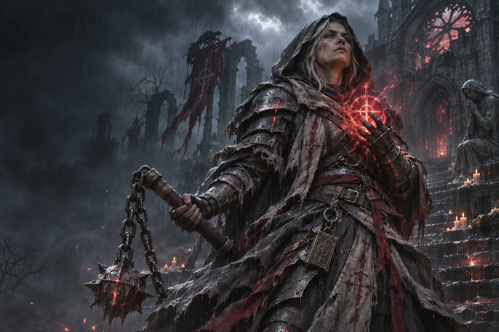

Something behind the glass
When the Observer wakes.
Three fleeting manifestations of the same ancient seal.
The eye fills the entire inner circle in every version.
Move your cursor. They are watching.
Beyond the frame
A memory with no edges.
The existing inner smoke now carries outward into curling wisps.
Move between the paintings to see how their colors meet the page.

Fortitude / a new beginning
Flagellant
Pain, notarized. A covenant that feeds on its keeper and repays exactly when the flesh runs short. Whole men owe; the broken are owed.